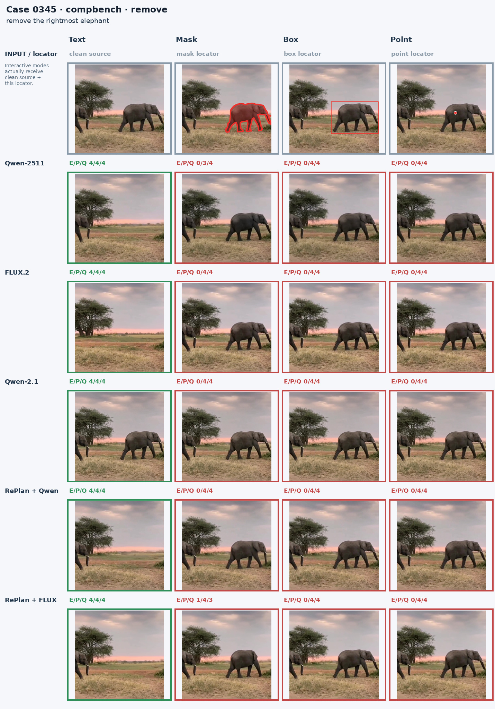
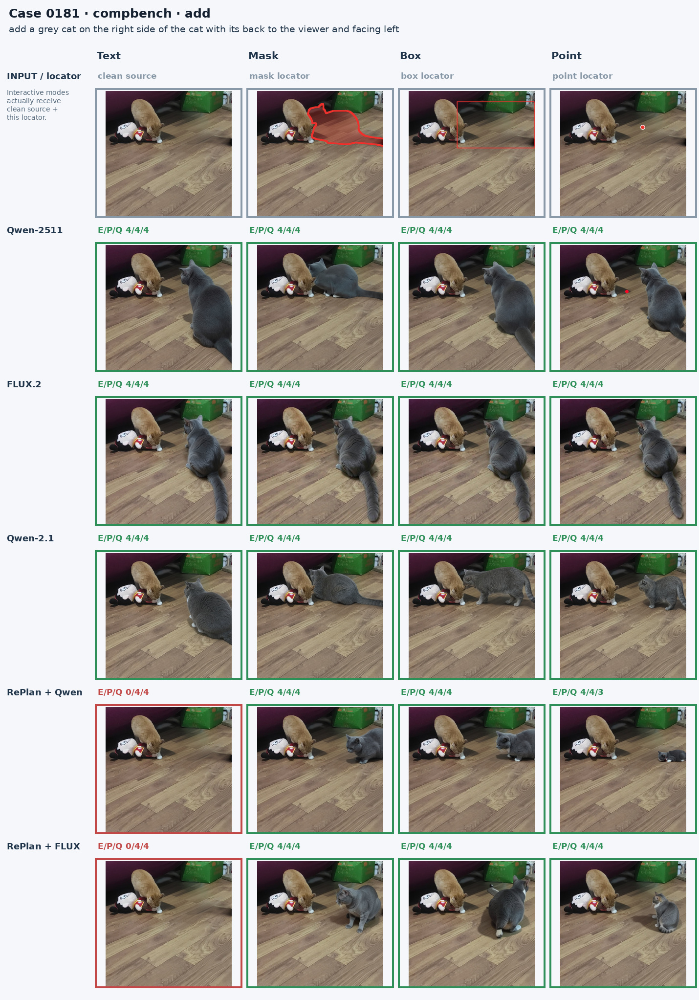
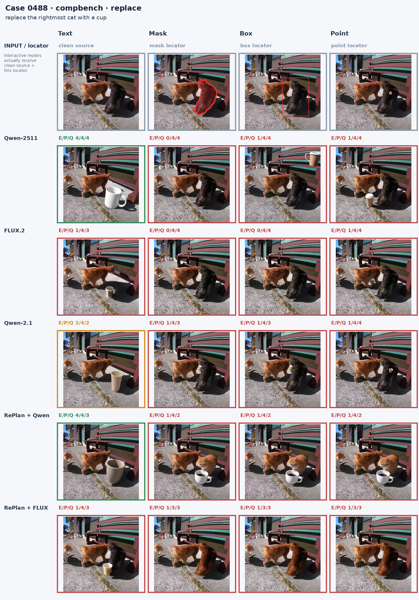
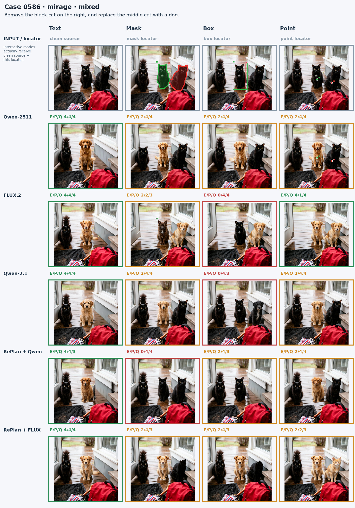
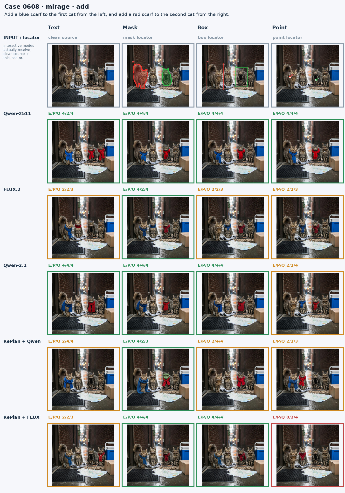
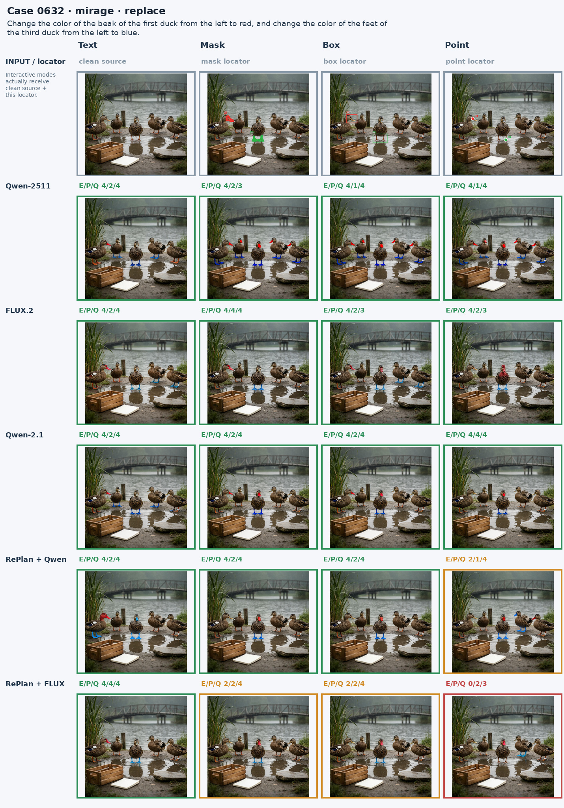
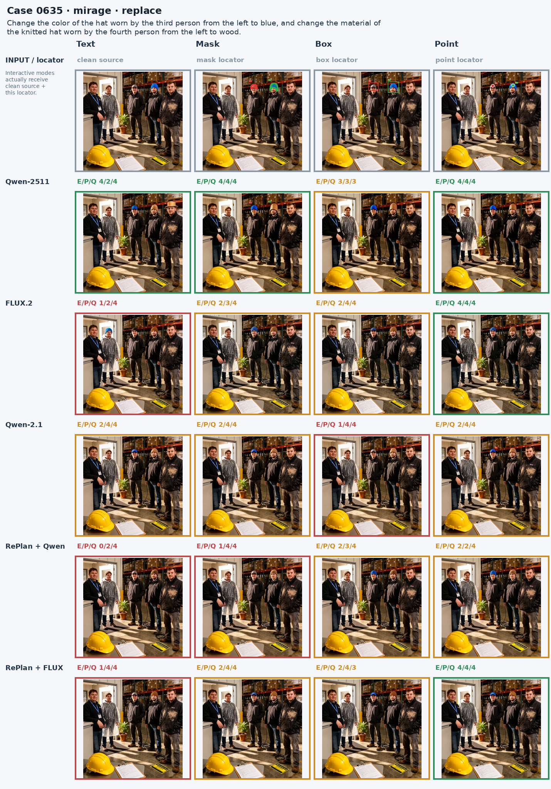

Setting case studyCase 0528
remove the rightmost dog and the tallest white dog between two dogs

Case 0345
remove the rightmost elephant

Case 0181
add a grey cat on the right side of the cat with its back to the viewer and facing left

Case 0488
replace the rightmost cat with a cup

Case 0586
Remove the black cat on the right, and replace the middle cat with a dog.

Case 0608
Add a blue scarf to the first cat from the left, and add a red scarf to the second cat from the right.

Case 0632
Change the color of the beak of the first duck from the left to red, and change the color of the feet of the third duck from the left to blue.

Case 0635
Change the color of the hat worn by the third person from the left to blue, and change the material of the knitted hat worn by the fourth person from the left to wood.
